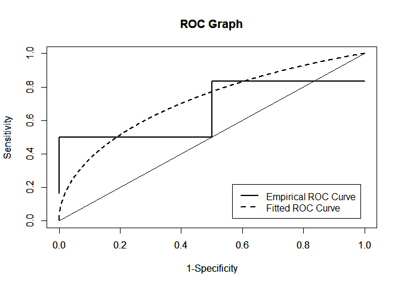

The goal of PLindleyROC is to evaluate the Receiver Operating Characteristic (ROC) for Power Lindley Distribution. Additionally, The performace asssesments can be performed associated with the Bi-Power Lindley ROC model.
Installation
You can install the development version of PLindleyROC via the following code:
# install.packages("devtools")
devtools::install_github("ErtanSU/PLindleyROC")Example
This is a basic example which shows you how to solve a common problem:
library(PLindleyROC)
dPLD(c(1,2,3,4,5,200),alpha=3,beta=2)
#> [1] 1.082682e+00 1.620507e-05 3.560890e-21 1.070039e-52 3.363180e-105
#> [6] 0.000000e+00
library(PLindleyROC)
pPLD(c(.5,1,2,3,4),alpha=3,beta=2)
#> [1] 0.1562992 0.7744412 0.9999993 1.0000000 1.0000000
library(PLindleyROC)
qPLD(c(.9971,0.5,0.3),alpha=3,beta=2)
#> [1] 1.5220612 0.7868721 0.6362570
library(PLindleyROC)
rPLD(10,alpha=3,beta=2)
#> [1] 0.5436087 0.9375416 0.8915812 0.8148094 0.8033171 0.7393295 0.8538517
#> [8] 0.8065840 1.3424998 0.7476467
library(PLindleyROC)
r.pl_auc(x=c(1,2,2,3,1),y=c(1,3,2,4,2,3),true_param=c(alpha1=1,beta1=1,alpha2=1,beta2=1),method=c("TRUE"))
#> [1] 0.5
library(PLindleyROC)
r.pl_index(x=c(1,2,2,3,1),y=c(1,3,2,4,2,3),init_param=c(1,1,1,1),init_index=1,method=c("MLE"))
#> Cut-off Point Sensitivity Specificity 1-Specificity
#> J 2.257651 0.5843951 0.7345488 0.2654512
#> ER 2.128638 0.6365278 0.6790223 0.3209777
#> CZ 2.155423 0.6258267 0.6909883 0.3090117
#> NI 2.049502 0.6676484 0.6424604 0.3575396
library(PLindleyROC)
x=c(1,2,2,3,1)
y=c(1,3,2,4,2,3)
r.pl_graph(x,y,init_param=c(1,1,1,1),empirical=TRUE,method=c("MLE"))
Corresponding Author
Department of Statistics, Faculty of Science, Selcuk University, 42250, Konya, Turkey
References
Akgenç, E., and Kuş, C., 2023, ROC Curve Analysis for the Measurements Distributed Power-Lindley Distribution, 2nd International E-Conference On Mathematical And Statistical Sciences: A Selçuk Meeting (ICOMSS-2023), Konya, 25.
Attwood, K., Hou, S., and Hutson, A., 2022, Application of the skew exponential power distribution to ROC curves, Journal of Applied Statistics, 1-16.
Ghitany M., Al-Mutairi D. K., Balakrishnan N., and Al-Enezi L., 2013, Power lindley distribution and associated inference, Computational Statistics & Data Analysis, 64,20–33.
Liu, X., 2012, Classification accuracy and cut point selection, Statistics in medicine, 31(23), 2676-2686.
Nahm, F. S., 2022, Receiver operating characteristic curve: overview and practical use for clinicians, Korean journal of anesthesiology, 75(1), 25-36.
Perkins, N. J., and Schisterman, E. F., 2006, The inconsistency of “optimal” cutpoints obtained using two criteria based on the receiver operating characteristic curve, American journal of epidemiology, 163(7), 670-675.
Pundir, S. and Amala, R., 2014, Evaluation of area under the constant shape bi-weibull roc curve, Journal of Modern Applied Statistical Methods, 13(1),1-20.
Youden, W. J., 1950, Index for rating diagnostic tests, Cancer, 3(1), 32-35.